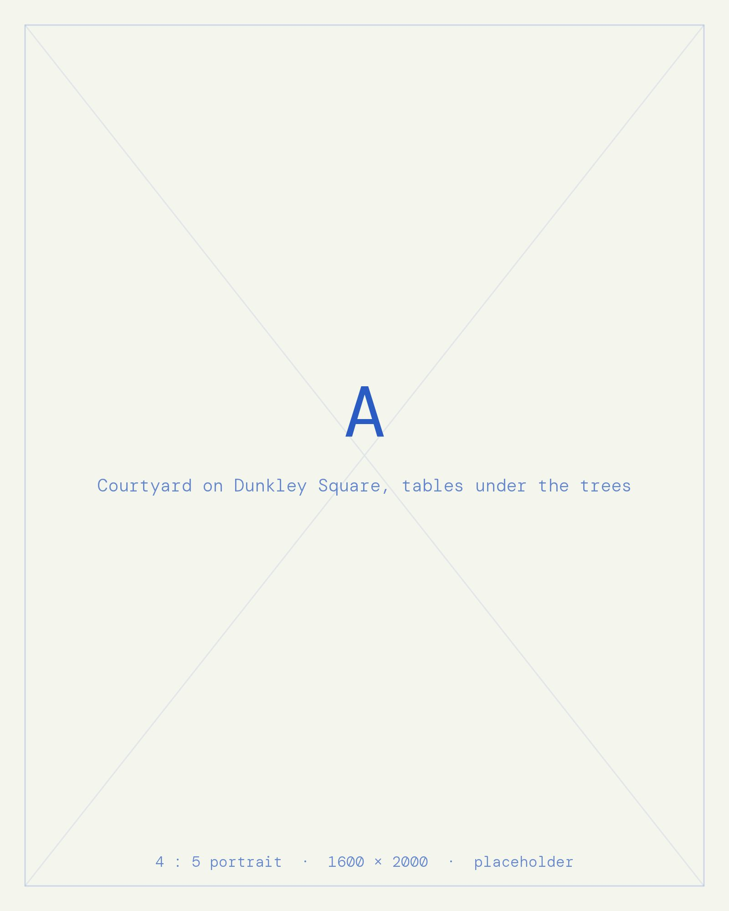
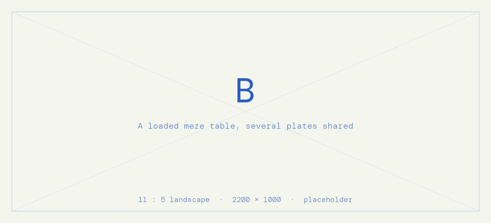
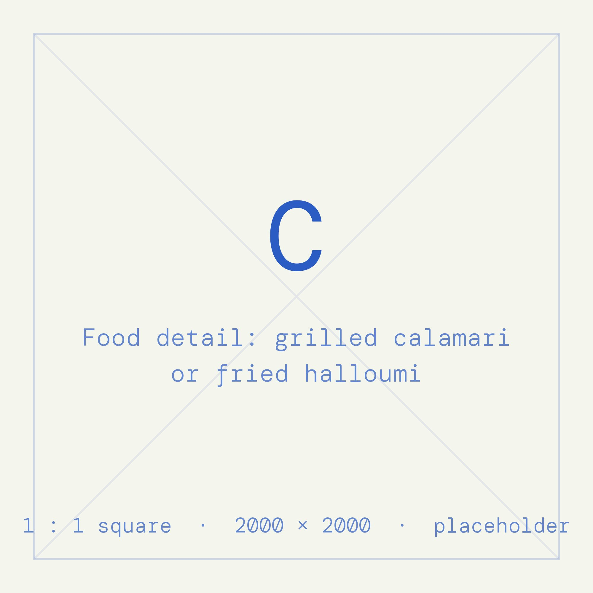
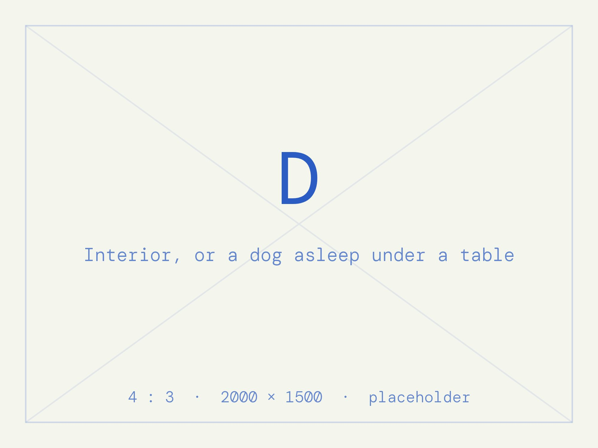

Since the 1950's, Maria's is one of Cape Town's oldest and most loved restaurants.




About
Maria ran a Greek deli from this building and lived in the rooms above it. In 1981 she disappeared overnight. The name stayed.
The restaurant has traded on Dunkley Square since the 1950s, which makes it one of the oldest in the city. Cleon Romano bought it in 1994 and he and his wife Kate still run it. Around forty seats inside, and more outside on the square under the trees.
Food
The menu changes. Call or come by for what is on today.
- Lamb youvetsi (house speciality) the house dish
- Slow-cooked lamb (house speciality) ouzo, artichoke cream
- Grilled calamarithe one reviewers name most
- Fried halloumiserved with tzatziki
- Spanakopitaspinach, onion, three cheeses
- Melizanesmarinated aubergine
- Keftetheslamb meatballs
- Dolmathesstuffed vine leaves
Meze is how most people eat here: several plates shared.
Gluten-free options are marked on the menu and the chips have a dedicated fryer.
Practical
- Address
- 31 Barnet Street, Dunkley Square, Gardens, Cape Town 8001
- Booking
- 021 461 3333 — by phone, no online booking
- Hours
- Mon 11:00–22:00 Tue–Sat 08:30–22:00 Sun 10:00–16:00
- Dogs
- Welcome. Water and a lamb bone on arrival.
- Also
- Outdoor seating · Wi-Fi · Parking · Wheelchair accessible · Takeaway · No delivery
- Events
- Private functions upstairs, up to about 96 guests